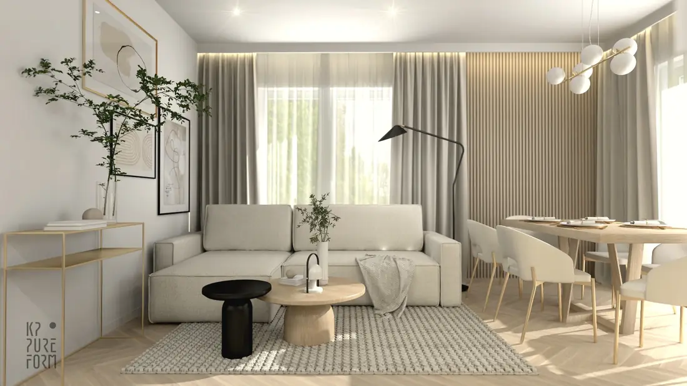

Wnętrza
Domy, mieszkania i biura. Naturalne kolory i materiały, umiar i ponadczasowa forma - wnętrza, które koją zmysły i dobrze się w nich żyje.
Zobacz projekty wnętrzSłońce, przestrzeń, zieleń. Projektuję wnętrza i ogrody jako jedną całość - w Tarnowskich Górach, na Śląsku i online.
Opisz swój projektJestem zwolenniczką otwierania domu na ogród i przenikania się tych dwóch przestrzeni. Dlatego najbardziej lubię projektować kompleksowo - wnętrze i ogród wokół niego. Można też zamówić tylko jedno z nich.
Domy, mieszkania i biura. Naturalne kolory i materiały, umiar i ponadczasowa forma - wnętrza, które koją zmysły i dobrze się w nich żyje.
Zobacz projekty wnętrzOgrody i rabaty, w których zieleń zaczyna się tuż za oknem salonu. Od konsultacji, przez projekt rabaty, po pełny projekt ogrodu z małą architekturą.
Zakres projektu ogroduWizualizacje z ostatnich projektów: mieszkania, domy, pokoje dzieci i miejski ogródek. Zdjęcia przesuwa się palcem albo myszą, a po kliknięciu można je powiększyć.
Wnętrze · Gliwice
Ogród · Gliwice
Wnętrze · Tarnowskie Góry
Wnętrze · Tarnowskie Góry
Mieszkanie · Tychy
Mieszkanie · Tarnowskie Góry
Wnętrze · Tarnowskie Góry
Wnętrze · Tarnowskie Góry

Projektując otoczenie, projektujemy nastrój.
KP Pure Form to autorska pracownia. Projektuję naturalne, funkcjonalne wnętrza i ogrody, w których w centrum jest samopoczucie domowników. Unikam nadmiaru bodźców: prosta, wyrazista forma, naturalne kolory i materiały, ciepły minimalizm z odrobiną szaleństwa.
Wizualizacje wykonuję sama, nie podzlecam ich na zewnątrz. Wyznacznikiem każdego projektu są potrzeby klientów: styl życia, przyzwyczajenia, preferencje i budżet.
Katarzyna PiotrowiakKP Pure Form, Tarnowskie Góry
Konsultacje, projekty rabat, ogrodów i wnętrz wyceniam indywidualnie, po poznaniu metrażu, lokalizacji i potrzeb.
Dla osób, które miały już styczność z wykańczaniem wnętrz i same ustalą szczegóły techniczne z wykonawcami. Niższy koszt, pełny obraz wnętrza.
Wszystko, czego potrzeba do realizacji - dla tych, którzy nie chcą odpowiadać na setki pytań ekipy wykończeniowej i stolarza.
Dla mieszkania ok. 60 m²: projekt koncepcyjny ok. 30 dni roboczych, wykonawczy ok. 60 dni roboczych.
Całość ogrodu albo wskazane miejsca: rozplanowanie przestrzeni, ścieżek i stref.
Dla samodzielnych: gotowe projekty rabat modułowych w formie e-booków, które można skracać, powielać i dopasować do swojego miejsca.
Cały proces jest podzielony na etapy, dzięki czemu w odpowiednim momencie podejmujesz świadome decyzje.
Zakres, rzuty lub inwentaryzacja na Śląsku, rozmowa o estetyce, budżecie i codziennych nawykach.
2-3 propozycje w rzutach 2D. Wybieramy jedną albo łączymy najlepsze.
Orientacyjne wyliczenie kosztów, żeby od początku było wiadomo, na co można sobie pozwolić.
Kolory, materiały i wyposażenie dobierane od razu na widokach 3D, nie na moodboardach.
Fotorealistyczne obrazy z dbałością o światło, odbicia i tekstury.
Zestawienie elementów projektu w ramach budżetu, w wykonawczym także wybór na żywo.
Projekty na Śląsku (m.in. Gliwice, Katowice, Chorzów, Bytom, Tarnowskie Góry), w innych rejonach Polski i online.
Na początek możesz umówić bezpłatną rozmowę wideo albo napisać przez formularz poniżej.